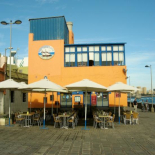
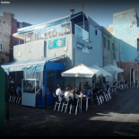
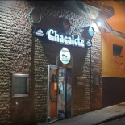

En la siguiente tabla se encuentra la información de algunos de los mejores restaurantes que pueden encontrarse en San Cristóbal - Las Palmas de Gran Canaria:
| Nombre e imagen | Calificación de usuarios | Puesto Top |
|---|---|---|
|
Restaurante Los Botes:  |
3,5 de 5 (216 votos) | 231 de 1316 |
|
Punto Marino:  |
3,5 de 5 (31 votos) | 681 de 1316 |
|
El Chacalote:  |
4 de 5 (31 votos) | 299 de 1316 |
Esta es una galeria de imágenes de algunos platos de los restuaurantes anteriores, presiona sobre ellos para agrandar las imágenes:
Plato perteneciente al menú del restaurante Los Botes

Plato perteneciente al menú del restaurante Los Botes

Plato perteneciente al menú del restaurante Los Botes

Plato perteneciente al menú del restaurante Los Botes

Plato perteneciente al menú del restaurante Punto Marino

Plato perteneciente al menú del restaurante Punto Marino

Plato perteneciente al menú del restaurante Punto Marino

Plato perteneciente al menú del restaurante Punto Marino

Plato perteneciente al menú del restaurante El Chacalote

Plato perteneciente al menú del restaurante El Chacalote

Plato perteneciente al menú del restaurante El Chacalote

Plato perteneciente al menú del restaurante El Chacalote